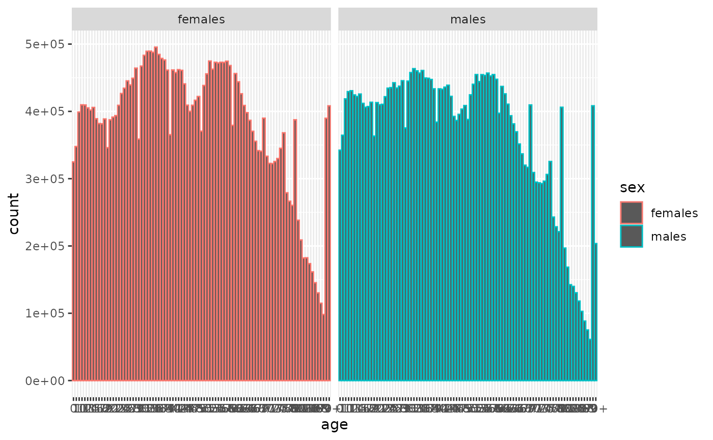

Dataset: ONS UK population 2023
Source:vignettes/ons_uk_population_2023.Rmd
ons_uk_population_2023.Rmd
library(NHSRdatasets)
ons_uk_population_2023 <- NHSRdatasets::ons_uk_population_2023This vignette details why the ons_uk_population_2023
dataset was created and how to load it.
ONS UK Population 2023
This dataset was added in October 2024 as part of Hacktoberfest The
original data was sourced from the ONS
mid year estimates of population for England and Wales and was
tidied using the code in
vignette("create_ons_uk_population_2023").
The dataset contains:
- sex: character for females and males
- code: character code for areas which corresponds to the Name column
- name: character for areas in the UK and in this dataset has been restricted to Countries and grouped Countries (United Kingdom and Great Britain)
- geography: character detail on area and in this dataset is just Country
- age: character with age in years from 0 to 90+
- count: number referring to the count of population
Small charts exploration
A bar chart to see all the Regions using ggplot2
ons_uk_population_2023 |>
dplyr::filter(name == "UNITED KINGDOM") |>
ggplot2::ggplot(ggplot2::aes(age, count, colour = sex)) +
ggplot2::geom_col() +
ggplot2::facet_wrap(~sex)
Looking at the chart there seems to be a spike in numbers towards the latter ages.
Scanning the ages they are in order so looking at the last 5 ages for both sexes, male and female
ons_uk_population_2023 |>
dplyr::filter(name == "UNITED KINGDOM") |>
dplyr::slice_tail(n = 5, by = sex)
#> # A tibble: 10 × 6
#> sex code name geography age count
#> <chr> <chr> <chr> <chr> <chr> <dbl>
#> 1 females K02000001 UNITED KINGDOM Country 86 145357
#> 2 females K02000001 UNITED KINGDOM Country 87 130223
#> 3 females K02000001 UNITED KINGDOM Country 88 114850
#> 4 females K02000001 UNITED KINGDOM Country 89 98220
#> 5 females K02000001 UNITED KINGDOM Country 90+ 408216
#> 6 males K02000001 UNITED KINGDOM Country 86 102785
#> 7 males K02000001 UNITED KINGDOM Country 87 88388
#> 8 males K02000001 UNITED KINGDOM Country 88 75138
#> 9 males K02000001 UNITED KINGDOM Country 89 61154
#> 10 males K02000001 UNITED KINGDOM Country 90+ 203503we can see that there is an unusual increase in numbers for the 90+ age group for both males and females